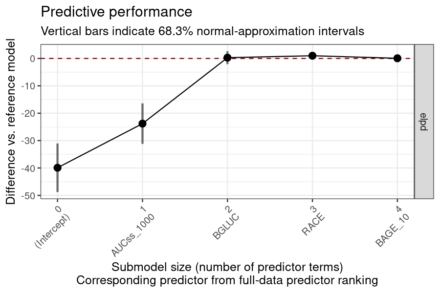
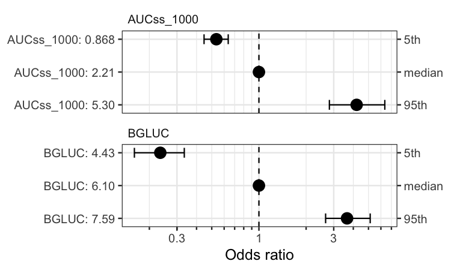

BayesERtools provides a suite of tools that facilitate exposure-response analysis using Bayesian methods.
- Tutorial (
BayesERbook): https://genentech.github.io/BayesERbook/ - Package documentation: https://genentech.github.io/BayesERtools/
- GitHub repo of the package: https://github.com/genentech/BayesERtools/
Installation
You can install the BayesERtools with:
install.packages('BayesERtools')
# devtools::install_github("genentech/BayesERtools") # development versionSupported model types
|
Binary endpoint
|
Continuous endpoint
|
|||
|---|---|---|---|---|
| Linear (logit) | Emax (logit) | Linear | Emax | |
| backend |
rstanarm
|
rstanemax
|
rstanarm
|
rstanemax
|
| reference | 🔗 | 🔗 | 🔗 | 🔗 |
| develop model | ✅ | ✅ | ✅ | ✅ |
| simulate & plot ER | ✅ | ✅ | ✅ | ✅ |
| exposure metrics selection | ✅ | ✅ | ✅ | ✅ |
| covariate selection | ✅ | ❌ | ✅ | ❌ |
| covariate forest plot | ✅ | ❌ | 🟡 | ❌ |
| ✅ Available, 🟡 In plan/under development, ❌ Not in a current plan | ||||
Quick guide
Here is a quick demo on how to use this package for E-R analysis. See Basic workflow for more thorough walk through.
# Load package and data
library(dplyr)
library(BayesERtools)
ggplot2::theme_set(ggplot2::theme_bw(base_size = 12))
data(d_sim_binom_cov)
# Hyperglycemia Grade 2+ (hgly2) data
df_er_ae_hgly2 <-
d_sim_binom_cov |>
filter(AETYPE == "hgly2") |>
# Re-scale AUCss, baseline age
mutate(
AUCss_1000 = AUCss / 1000, BAGE_10 = BAGE / 10,
Dose = paste(Dose_mg, "mg")
)
var_resp <- "AEFLAG"Simple univariable model for binary endpoint
set.seed(1234)
ermod_bin <- dev_ermod_bin(
data = df_er_ae_hgly2,
var_resp = var_resp,
var_exposure = "AUCss_1000"
)
ermod_bin
#>
#> ── Binary ER model ─────────────────────────────────────────────────────────────
#> ℹ Use `plot_er()` to visualize ER curve
#>
#> ── Developed model ──
#>
#> stan_glm
#> family: binomial [logit]
#> formula: AEFLAG ~ AUCss_1000
#> observations: 500
#> predictors: 2
#> ------
#> Median MAD_SD
#> (Intercept) -2.04 0.23
#> AUCss_1000 0.41 0.08
#> ------
#> * For help interpreting the printed output see ?print.stanreg
#> * For info on the priors used see ?prior_summary.stanreg
# Using `*` instead of `+` so that scale can be
# applied for both panels (main plot and boxplot)
plot_er_gof(ermod_bin, var_group = "Dose", show_coef_exp = TRUE) *
xgxr::xgx_scale_x_log10()
Covariate selection
BGLUC (baseline glucose) is selected while other two covariates are not.
set.seed(1234)
ermod_bin_cov_sel <-
dev_ermod_bin_cov_sel(
data = df_er_ae_hgly2,
var_resp = var_resp,
var_exposure = "AUCss_1000",
var_cov_candidate = c("BAGE_10", "RACE", "BGLUC")
)
#>
#> ── Step 1: Full reference model fit ──
#>
#> ── Step 2: Variable selection ──
#>
#> ℹ The variables selected were: AUCss_1000, BGLUC
#>
#> ── Step 3: Final model fit ──
#>
#> ── Cov mod dev complete ──
#>
ermod_bin_cov_sel
#> ── Binary ER model & covariate selection ───────────────────────────────────────
#> ℹ Use `plot_submod_performance()` to see variable selection performance
#> ℹ Use `plot_er()` with `marginal = TRUE` to visualize marginal ER curve
#>
#> ── Selected model ──
#>
#> stan_glm
#> family: binomial [logit]
#> formula: AEFLAG ~ AUCss_1000 + BGLUC
#> observations: 500
#> predictors: 3
#> ------
#> Median MAD_SD
#> (Intercept) -7.59 0.90
#> AUCss_1000 0.46 0.08
#> BGLUC 0.87 0.13
#> ------
#> * For help interpreting the printed output see ?print.stanreg
#> * For info on the priors used see ?prior_summary.stanreg
plot_submod_performance(ermod_bin_cov_sel)
coveffsim <- sim_coveff(ermod_bin_cov_sel)
plot_coveff(coveffsim)